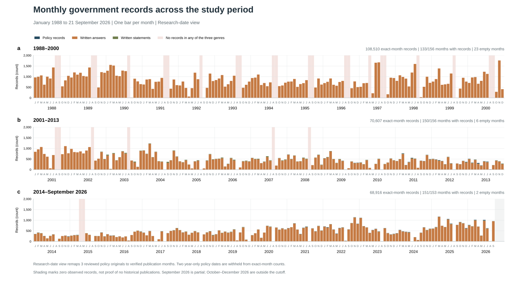
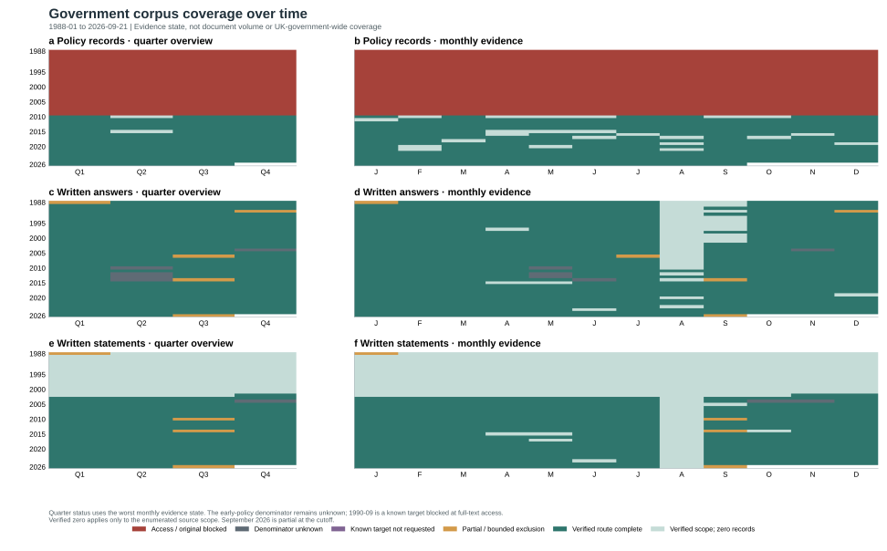

The formal 06 database was read only. September 1990 is now a known missing policy target rather than an undifferentiated zero; most other early-policy months still have an unknown population denominator.


| Command | Title | Date | Status |
|---|---|---|---|
| Cm 1200 | This Common Inheritance: Britain's Environmental Strategy | 1990-09 | known_target_original_unavailable |
| Cm 2426 | Sustainable Development: The UK Strategy | 1994-01-25 | catalogued_original_not_acquired |
| Cm 2427 | Climate Change: The UK Programme | 1994-01-25 | catalogued_original_not_acquired |
| Cm 4345 | A Better Quality of Life: A Strategy for Sustainable Development for the United Kingdom | 1999-05 | catalogued_original_not_acquired |
| Cm 4913 | Climate Change: The UK Programme | 2000-11-17 | official_archive_access_blocked |
| Cm 6467 | Securing the Future: Delivering UK Sustainable Development Strategy | 2005-03 | existing_original_date_mapped |
Generated 2026-09-23T01:21:44Z. Counts and coverage states are deliberately separate.